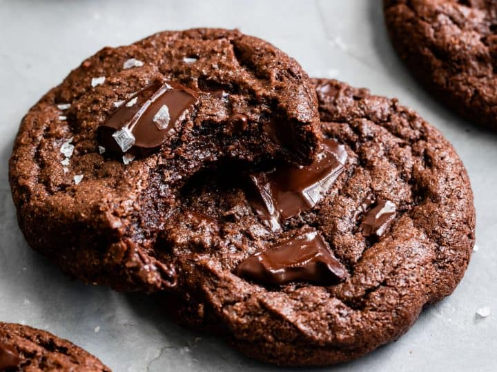

Chocolate Cookies

Description
Ingrediants
- 1 cups margarine, softened
- 2 eggs
- 2 cups white sugar
- 2 cups all-purpose flour
- 2 teaspoons vanilla extract
- 1 cup chopped walnuts
- 1 teaspoon baking soda
- 1 cup cocoa powder
Steps
- Preheat oven to 350 degrees F (175 degrees C).
- In a large bowl, cream together margarine and sugar until smooth. Beat in eggs one at a time, then stir in the vanilla. Combine flour, cocoa, baking soda, and salt; stir into the creamed mixture until just blended. Mix in walnuts. Drop by spoonfuls onto ungreased cookie sheets.
- Bake for 8 to 10 minutes in the preheated oven. Cool for a couple of minutes on the cookie sheet before transferring to wire racks to cool completely.